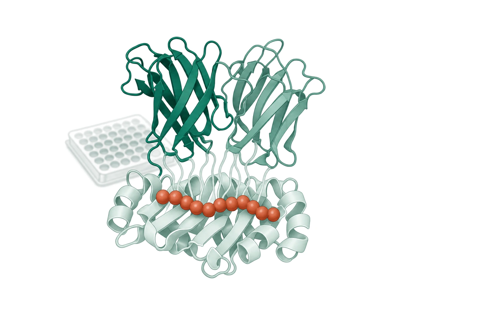
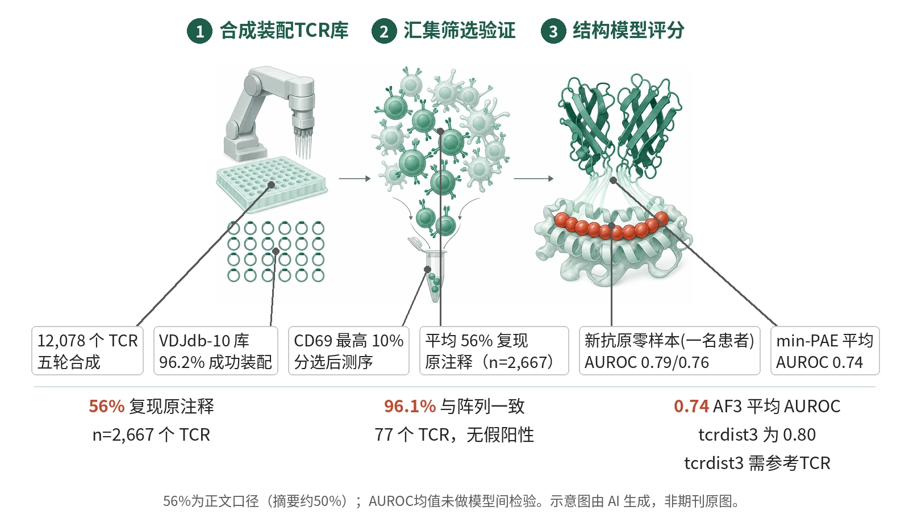

封面示意：绿色的 T 细胞受体（TCR）结合在浅色 MHC 分子上，红色串珠代表被呈递的肽段，左侧多孔板寓意汇集功能筛选。图片由 AI 生成，非原文图片。
T-RAP合成TCR库经汇集筛选检验VDJdb注释，平均仅56%（n=2,667）复现原反应性；在验证集上tcrdist3与AlphaFold3平均AUROC分别为0.80、0.74。

- 机器人在384孔板装配12,078个TCR
- Jurkat与B细胞共培养，分选CD69最高10%
- 平均仅56%的TCR复现原注释反应性
- AlphaFold3 min-PAE评分，平均AUROC 0.74
机器人在孔板中逐个装配合成TCR，形成均一文库；文库转入报告细胞与抗原提呈细胞共培养，经汇集功能筛选得到验证TCR（平均仅56%复现原注释）；再以AlphaFold3界面置信度评分。示意图由 AI 生成，依据原文结果绘制，非期刊原图，不代表分子比例
研究背景与待解问题
预测TCR对pMHC的反应性是免疫学的长期目标，但进展有限。训练与评估所依赖的VDJdb、IEDB数据来自多种实验方法与样本来源；VDJdb虽有置信分，其价值不明，各库中真正反应的TCR-pMHC所占比例也从未被评估。
作者推测数据集质量本身可能构成限制。为此，研究先建立可规模化装配合成TCR的平台T-RAP，在统一条件下功能验证数千个已报道的TCR-pMHC配对，再用验证后的数据评估tcrdist3与AlphaFold3，并在一例黑色素瘤患者的新抗原TCR上做零样本检验。
研究设计
临床前方法学与计算评估研究，无患者分组，各比较为描述性或单独检验，无组间效能设计。VDJdb经过滤保留6,307条条目，取注释到密度最高的10个表位的TCR构建VDJdb-10库（3,693个TCR），其中八个表位（HLA-A*01:01或A*02:01限制）用于筛选。T-RAP在384孔板中逐个装配TCR并保留阵列存档。
TCR库导入TCR缺失的CD8αβ+ Jurkat细胞，与表达表位及对应HLA的永生化B细胞共培养，分选CD69最高10%的细胞，三次技术重复，库覆盖500x。用PyDESeq2的Wald检验比较各表位CD69+组的富集，P值低于468个阴性对照TCR第5百分位者判为验证，另设零假设判定非验证，其余为不明确。模型以AUROC与AUC PR评估。
核心结果
平台与库质量
T-RAP在五轮合成中装配了12,078个TCR，其中TCR-s1至TCR-s4共8,385个，覆盖肿瘤来源与设计TCR。VDJdb-10库（3,693个TCR）经UMI-ONT分析，96.2%的TCR成功装配，平均79%的分子序列完全正确，第5与第95百分位的TCR丰度仅相差6.1倍。每个库随机抽取82个装配做Sanger测序，>98%以目标TCR为主导序列。
主要读出：注释验证率
在功能筛选中，平均仅56%的被评估TCR（n=2,667）复现了原注释反应性（摘要写作约50%，此处用正文口径）。按表位，验证率从NLV的28.3%（91/322）到CIN的76.3%（174/228）；按来源研究，验证率从<10%到>95%。VDJdb自身置信分仅显示中等精确度、低敏感度。以上均为描述性比例，未做组间检验。
筛选准确性与读出一致性
以77个TCR的阵列共培养为真值，汇集筛选与之一致率为96.1%，假阴性率3.9%，无假阳性；49个TCR在Jurkat的CD69与原代CD8+ T细胞的CD137两种读出下完全一致。GLC与YLQ的多聚体汇集筛选验证率分别为64.7%和41.9%，与功能筛选一致性93%；18个不一致TCR中15个为假阴性（多聚体6个、功能9个），无假阳性，另3个YLQ TCR能结合但不引起信号。
两种模型的区分能力
tcrdist3在GIL与YLQ表位的AUROC为0.87–0.93，AlphaFold3 min-PAE在LLW与YLQ为0.84–0.88、在CIN与LTD仅0.58–0.61；两者平均AUROC分别为0.80和0.74，但tcrdist3需已知反应性的参考TCR。AlphaFold3 RTR评分对全部8个表位均将验证TCR与同源pMHC配对的排序高于与非同源pMHC配对，GIL与LTD的AUROC为0.83–0.90，CIN与NLV为0.65–0.66。
对照与新抗原零样本检验
对照中，未验证的YLQ、GLC注释TCR无RTR表现；有PDB结构的TCR评分未高于平均，训练集无结构的LTD与LLW仍有表现。在一名黑色素瘤患者197个TIL TCR中，AlphaFold3零样本对TNFAIP2 P>A（8个反应性TCR）与CCSER2 P>L（11个）的AUROC为0.79（p=5.5×10⁻³）与0.76（p=3.3×10⁻³），AUC PR为0.20（随机0.04）与0.28（随机0.06）。
机制解读
原文实验证明：在阵列检测的77个TCR中，汇集筛选未见假阳性，另18个不一致TCR的个体检测亦未见假阳性；功能信号与多聚体结合的一致性为93%，因此低验证率不能简单归因于读出方式。在验证集中，tcrdist3与AlphaFold3 min-PAE均可区分验证与非验证TCR（平均AUROC分别0.80、0.74）。
对照实验中，未验证的YLQ、GLC注释TCR没有RTR表现；有PDB复合物结构的TCR并无高于平均的RTR，LTD与LLW训练集无结构仍有表现，不支持数据泄漏为成因。
作者推测：作者推测，VDJdb错误可能来自多聚体非特异结合与双TCRα细胞的α链误判；只结合不信号的3个YLQ TCR可能与反向对接或缺乏catch bond有关。AlphaFold3表现可能受模型准确性、评分准确性、模型相关性三因素限制；两个表位上多聚体预测未优于信号预测，作者据此认为力诱导构象不太可能是主因。
局限与不确定
- TCRvdb仅覆盖八个研究最充分的病毒表位，限于HLA-A*01:01与A*02:01，并在Jurkat报告细胞中测定；作者指出需扩展到更多表位。
- 新抗原检验仅来自一名患者的197个TIL TCR（反应性8个与11个），AUC PR为0.20与0.28，虽高于随机的0.04与0.06，绝对水平仍低；作者也指出AlphaFold3性能需进一步提高才能广泛用于临床，CIN与LTD的AUROC仅0.58–0.61。
- 阵列库的均一性比汇集装配（Rootpath、TCRAFT）约高7.5倍，但汇集法可不借助机器人生成更大的库，多样性与灵敏度需权衡；验证集含3.9%假阴性率，使第一类任务的性能被略微低估；tcrdist3与AlphaFold3的平均AUROC未做正式比较。
临床/产业意义
若这些结果在更多表位与HLA背景中成立，公共TCR数据库中相当比例的注释可能需在统一条件下重新验证，此前对预测模型性能的估计也可能偏低。不同来源研究的验证率差异很大，提示数据质量本身会影响对模型的评价。
TCRvdb可作为评估与改进模型的验证集，T-RAP可仅凭序列装配任意TCR库。若结构预测经进一步改进，或可为患者特异性新抗原TCR提供初筛；但目前仅有一名患者的零样本检验，尚非临床验证。VDJdb的置信分仅显示中等精确度，提示其之外仍需标准化验证。